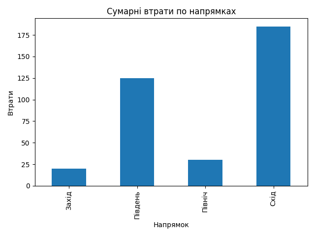

| Напрямок | Тип події | Сума втрат | Середні втрати | Максимальні втрати | Кількість подій |
|---|---|---|---|---|---|
| Захід | Артобстріл | 20 | 20.0 | 20 | 1 |
| Південь | Артобстріл | 45 | 45.0 | 45 | 1 |
| Південь | Наступ | 80 | 80.0 | 80 | 1 |
| Північ | Наступ | 30 | 30.0 | 30 | 1 |
| Схід | Артобстріл | 65 | 65.0 | 65 | 1 |
| Схід | Наступ | 120 | 120.0 | 120 | 1 |
Додано графіки:
